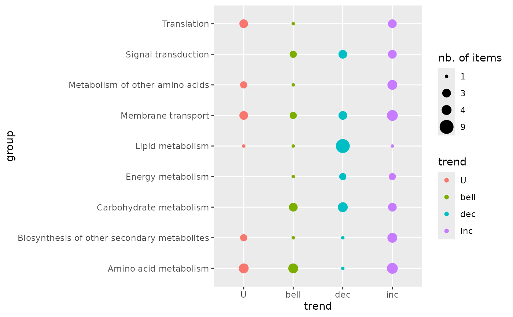
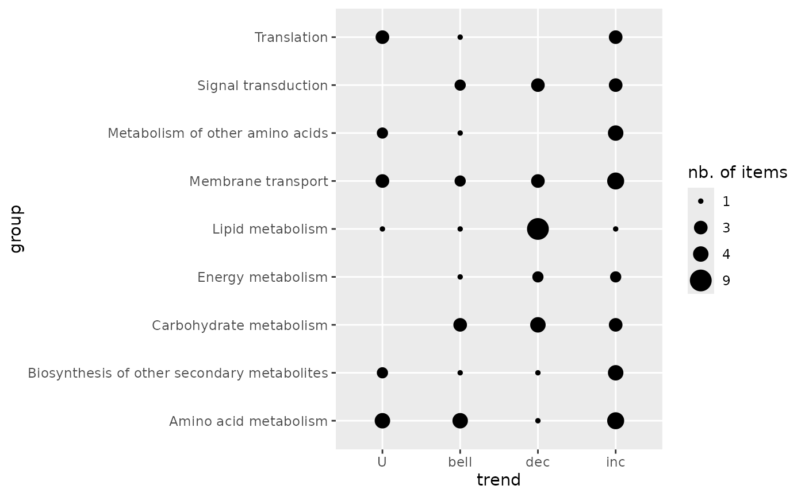
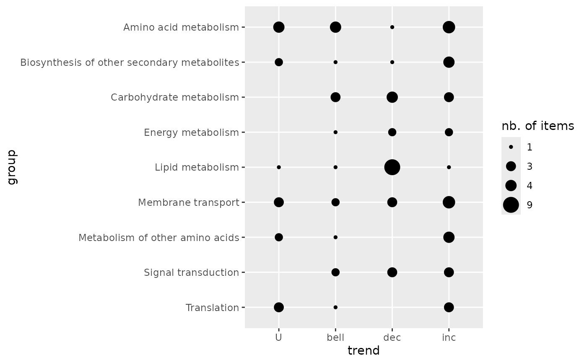
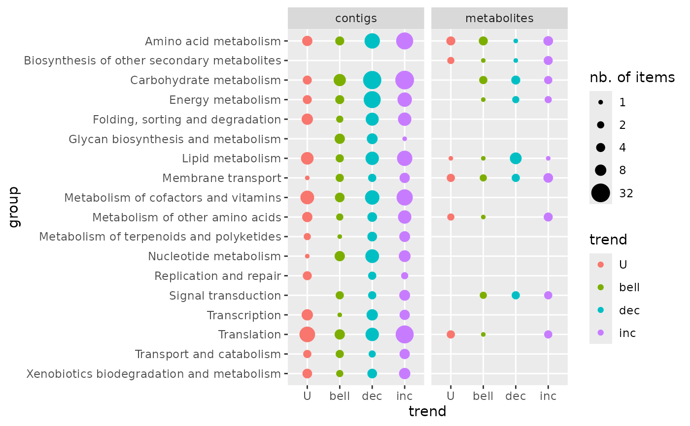

trendplot.RdProvides a plot of the repartition of dose-response trends per group of items.
trendplot(extendedres, group, facetby, ncol4faceting, add.color = TRUE)the dataframe of results provided by drcfit (fitres)
or bmdcalc (res)
or a subset of this data frame (selected lines). This dataframe should be extended
with additional columns coming for the group (for example from the functional
annotation of items) and/or for another level (for example the molecular level),
and some lines
can be replicated if their corresponding item has more than one annotation.
This extended dataframe
must at least contain as results of the dose-response modelling
the column giving the trend (trend).
the name of the column of extendedres coding for the groups
on which we want to see the repartition of dose-response trends.
This column should be a factor ordered as you want the groups to appear
in the plot from bottom up.
optional argument naming the column of extendedres chosen
to split the plot in facets using ggplot2::facet_wrap (no split if omitted).
number of columns for faceting.
if TRUE a color is added coding for the trend.
a ggplot object.
See bmdplotwithgradient and curvesplot.
# (1)
# An example from the paper published by Larras et al. 2020
# in Journal of Hazardous Materials
# https://doi.org/10.1016/j.jhazmat.2020.122727
# the dataframe with metabolomic results
resfilename <- system.file("extdata", "triclosanSVmetabres.txt", package="DRomics")
res <- read.table(resfilename, header = TRUE, stringsAsFactors = TRUE)
str(res)
#> 'data.frame': 31 obs. of 27 variables:
#> $ id : Factor w/ 31 levels "NAP47_51","NAP_2",..: 2 3 4 5 6 7 8 9 10 11 ...
#> $ irow : int 2 21 28 34 38 47 49 51 53 67 ...
#> $ adjpvalue : num 6.23e-05 1.11e-05 1.03e-05 1.89e-03 4.16e-03 ...
#> $ model : Factor w/ 4 levels "Gauss-probit",..: 2 3 3 2 2 4 2 2 3 3 ...
#> $ nbpar : int 3 2 2 3 3 5 3 3 2 2 ...
#> $ b : num 0.4598 -0.0595 -0.0451 0.6011 0.6721 ...
#> $ c : num NA NA NA NA NA ...
#> $ d : num 5.94 5.39 7.86 6.86 6.21 ...
#> $ e : num -1.648 NA NA -0.321 -0.323 ...
#> $ f : num NA NA NA NA NA ...
#> $ SDres : num 0.126 0.0793 0.052 0.2338 0.2897 ...
#> $ typology : Factor w/ 10 levels "E.dec.concave",..: 2 7 7 2 2 9 2 2 7 7 ...
#> $ trend : Factor w/ 4 levels "U","bell","dec",..: 3 3 3 3 3 1 3 3 3 3 ...
#> $ y0 : num 5.94 5.39 7.86 6.86 6.21 ...
#> $ yrange : num 0.456 0.461 0.35 0.601 0.672 ...
#> $ maxychange : num 0.456 0.461 0.35 0.601 0.672 ...
#> $ xextrem : num NA NA NA NA NA ...
#> $ yextrem : num NA NA NA NA NA ...
#> $ BMD.zSD : num 0.528 1.333 1.154 0.158 0.182 ...
#> $ BMR.zSD : num 5.82 5.31 7.81 6.62 5.92 ...
#> $ BMD.xfold : num NA NA NA NA 0.832 ...
#> $ BMR.xfold : num 5.35 4.85 7.07 6.17 5.59 ...
#> $ BMD.zSD.lower : num 0.2001 0.8534 0.7519 0.0554 0.081 ...
#> $ BMD.zSD.upper : num 1.11 1.746 1.465 0.68 0.794 ...
#> $ BMD.xfold.lower : num Inf 7.611 Inf 0.561 0.329 ...
#> $ BMD.xfold.upper : num Inf Inf Inf Inf Inf ...
#> $ nboot.successful: int 957 1000 1000 648 620 872 909 565 1000 1000 ...
# the dataframe with annotation of each item identified in the previous file
# each item may have more than one annotation (-> more than one line)
annotfilename <- system.file("extdata", "triclosanSVmetabannot.txt", package="DRomics")
annot <- read.table(annotfilename, header = TRUE, stringsAsFactors = TRUE)
str(annot)
#> 'data.frame': 84 obs. of 2 variables:
#> $ metab.code: Factor w/ 31 levels "NAP47_51","NAP_2",..: 2 3 4 4 4 4 5 6 7 8 ...
#> $ path_class: Factor w/ 9 levels "Amino acid metabolism",..: 5 3 3 2 6 8 5 5 5 5 ...
# Merging of both previous dataframes
# in order to obtain an extenderes dataframe
extendedres <- merge(x = res, y = annot, by.x = "id", by.y = "metab.code")
head(extendedres)
#> id irow adjpvalue model nbpar b c d
#> 1 NAP47_51 46 7.158246e-04 linear 2 -0.05600559 NA 7.343571
#> 2 NAP_2 2 6.232579e-05 exponential 3 0.45981242 NA 5.941896
#> 3 NAP_23 21 1.106958e-05 linear 2 -0.05946618 NA 5.387252
#> 4 NAP_30 28 1.028343e-05 linear 2 -0.04507832 NA 7.859109
#> 5 NAP_30 28 1.028343e-05 linear 2 -0.04507832 NA 7.859109
#> 6 NAP_30 28 1.028343e-05 linear 2 -0.04507832 NA 7.859109
#> e f SDres typology trend y0 yrange maxychange
#> 1 NA NA 0.12454183 L.dec dec 7.343571 0.4346034 0.4346034
#> 2 -1.647958 NA 0.12604568 E.dec.convex dec 5.941896 0.4556672 0.4556672
#> 3 NA NA 0.07929266 L.dec dec 5.387252 0.4614576 0.4614576
#> 4 NA NA 0.05203245 L.dec dec 7.859109 0.3498078 0.3498078
#> 5 NA NA 0.05203245 L.dec dec 7.859109 0.3498078 0.3498078
#> 6 NA NA 0.05203245 L.dec dec 7.859109 0.3498078 0.3498078
#> xextrem yextrem BMD.zSD BMR.zSD BMD.xfold BMR.xfold BMD.zSD.lower
#> 1 NA NA 2.2237393 7.219029 NA 6.609214 0.9785095
#> 2 NA NA 0.5279668 5.815850 NA 5.347706 0.2000881
#> 3 NA NA 1.3334076 5.307960 NA 4.848527 0.8533711
#> 4 NA NA 1.1542677 7.807077 NA 7.073198 0.7518588
#> 5 NA NA 1.1542677 7.807077 NA 7.073198 0.7518588
#> 6 NA NA 1.1542677 7.807077 NA 7.073198 0.7518588
#> BMD.zSD.upper BMD.xfold.lower BMD.xfold.upper nboot.successful
#> 1 4.068699 Inf Inf 1000
#> 2 1.109559 Inf Inf 957
#> 3 1.746010 7.610936 Inf 1000
#> 4 1.464998 Inf Inf 1000
#> 5 1.464998 Inf Inf 1000
#> 6 1.464998 Inf Inf 1000
#> path_class
#> 1 Lipid metabolism
#> 2 Lipid metabolism
#> 3 Carbohydrate metabolism
#> 4 Carbohydrate metabolism
#> 5 Biosynthesis of other secondary metabolites
#> 6 Membrane transport
# (1.a) Trendplot by pathway
trendplot(extendedres, group = "path_class")

# \donttest{
# (1.b) Trendplot by pathway without color
trendplot(extendedres, group = "path_class", add.color = FALSE)

# (1.c) Reordering of the groups before plotting
extendedres$path_class <- factor(extendedres$path_class,
levels = sort(levels(extendedres$path_class), decreasing = TRUE))
trendplot(extendedres, group = "path_class", add.color = FALSE)

# (2)
# An example with two molecular levels
#
### Rename metabolomic results
metabextendedres <- extendedres
# Import the dataframe with transcriptomic results
contigresfilename <- system.file("extdata", "triclosanSVcontigres.txt", package = "DRomics")
contigres <- read.table(contigresfilename, header = TRUE, stringsAsFactors = TRUE)
str(contigres)
#> 'data.frame': 447 obs. of 27 variables:
#> $ id : Factor w/ 447 levels "c00134","c00276",..: 1 2 3 4 5 6 7 8 9 10 ...
#> $ irow : int 2802 39331 41217 52577 52590 53968 54508 57776 58705 60306 ...
#> $ adjpvalue : num 2.76e-04 9.40e-07 2.89e-06 1.88e-03 1.83e-03 ...
#> $ model : Factor w/ 4 levels "Gauss-probit",..: 3 2 2 2 2 2 3 2 1 3 ...
#> $ nbpar : int 2 3 3 3 3 3 2 3 4 2 ...
#> $ b : num -0.21794 1.49944 1.40817 0.00181 1.48605 ...
#> $ c : num NA NA NA NA NA ...
#> $ d : num 10.9 12.4 12.4 16.4 15.3 ...
#> $ e : num NA -2.2 -2.41 1.15 -2.31 ...
#> $ f : num NA NA NA NA NA ...
#> $ SDres : num 0.417 0.287 0.281 0.145 0.523 ...
#> $ typology : Factor w/ 10 levels "E.dec.concave",..: 7 2 2 4 2 2 7 1 5 8 ...
#> $ trend : Factor w/ 4 levels "U","bell","dec",..: 3 3 3 4 3 3 3 3 1 4 ...
#> $ y0 : num 10.9 12.4 12.4 16.4 15.3 ...
#> $ yrange : num 1.445 1.426 1.319 0.567 1.402 ...
#> $ maxychange : num 1.445 1.426 1.319 0.567 1.402 ...
#> $ xextrem : num NA NA NA NA NA ...
#> $ yextrem : num NA NA NA NA NA ...
#> $ BMD.zSD : num 1.913 0.467 0.536 5.073 1.004 ...
#> $ BMR.zSD : num 10.4 12.1 12.1 16.6 14.8 ...
#> $ BMD.xfold : num 4.98 3.88 5.13 NA NA ...
#> $ BMR.xfold : num 9.77 11.19 11.17 18.05 13.8 ...
#> $ BMD.zSD.lower : num 1.255 0.243 0.282 2.65 0.388 ...
#> $ BMD.zSD.upper : num 2.759 0.825 0.925 5.573 2.355 ...
#> $ BMD.xfold.lower : num 3.94 2.32 2.79 Inf 3.06 ...
#> $ BMD.xfold.upper : num Inf Inf Inf Inf Inf ...
#> $ nboot.successful: int 500 497 495 332 466 469 500 321 260 500 ...
# Import the dataframe with functional annotation (or any other descriptor/category
# you want to use, here KEGG pathway classes)
contigannotfilename <- system.file("extdata", "triclosanSVcontigannot.txt", package = "DRomics")
contigannot <- read.table(contigannotfilename, header = TRUE, stringsAsFactors = TRUE)
str(contigannot)
#> 'data.frame': 562 obs. of 2 variables:
#> $ contig : Factor w/ 447 levels "c00134","c00276",..: 1 2 3 4 5 6 7 8 9 10 ...
#> $ path_class: Factor w/ 17 levels "Amino acid metabolism",..: 3 11 11 15 8 4 3 4 8 2 ...
# Merging of both previous dataframes
contigextendedres <- merge(x = contigres, y = contigannot, by.x = "id", by.y = "contig")
# to see the structure of this dataframe
str(contigextendedres)
#> 'data.frame': 562 obs. of 28 variables:
#> $ id : Factor w/ 447 levels "c00134","c00276",..: 1 2 3 4 5 6 7 8 9 10 ...
#> $ irow : int 2802 39331 41217 52577 52590 53968 54508 57776 58705 60306 ...
#> $ adjpvalue : num 2.76e-04 9.40e-07 2.89e-06 1.88e-03 1.83e-03 ...
#> $ model : Factor w/ 4 levels "Gauss-probit",..: 3 2 2 2 2 2 3 2 1 3 ...
#> $ nbpar : int 2 3 3 3 3 3 2 3 4 2 ...
#> $ b : num -0.21794 1.49944 1.40817 0.00181 1.48605 ...
#> $ c : num NA NA NA NA NA ...
#> $ d : num 10.9 12.4 12.4 16.4 15.3 ...
#> $ e : num NA -2.2 -2.41 1.15 -2.31 ...
#> $ f : num NA NA NA NA NA ...
#> $ SDres : num 0.417 0.287 0.281 0.145 0.523 ...
#> $ typology : Factor w/ 10 levels "E.dec.concave",..: 7 2 2 4 2 2 7 1 5 8 ...
#> $ trend : Factor w/ 4 levels "U","bell","dec",..: 3 3 3 4 3 3 3 3 1 4 ...
#> $ y0 : num 10.9 12.4 12.4 16.4 15.3 ...
#> $ yrange : num 1.445 1.426 1.319 0.567 1.402 ...
#> $ maxychange : num 1.445 1.426 1.319 0.567 1.402 ...
#> $ xextrem : num NA NA NA NA NA ...
#> $ yextrem : num NA NA NA NA NA ...
#> $ BMD.zSD : num 1.913 0.467 0.536 5.073 1.004 ...
#> $ BMR.zSD : num 10.4 12.1 12.1 16.6 14.8 ...
#> $ BMD.xfold : num 4.98 3.88 5.13 NA NA ...
#> $ BMR.xfold : num 9.77 11.19 11.17 18.05 13.8 ...
#> $ BMD.zSD.lower : num 1.255 0.243 0.282 2.65 0.388 ...
#> $ BMD.zSD.upper : num 2.759 0.825 0.925 5.573 2.355 ...
#> $ BMD.xfold.lower : num 3.94 2.32 2.79 Inf 3.06 ...
#> $ BMD.xfold.upper : num Inf Inf Inf Inf Inf ...
#> $ nboot.successful: int 500 497 495 332 466 469 500 321 260 500 ...
#> $ path_class : Factor w/ 17 levels "Amino acid metabolism",..: 3 11 11 15 8 4 3 4 8 2 ...
### Merge metabolomic and transcriptomic results
extendedres <- rbind(metabextendedres, contigextendedres)
extendedres$molecular.level <- factor(c(rep("metabolites", nrow(metabextendedres)),
rep("contigs", nrow(contigextendedres))))
str(extendedres)
#> 'data.frame': 646 obs. of 29 variables:
#> $ id : Factor w/ 478 levels "NAP47_51","NAP_2",..: 1 2 3 4 4 4 4 5 6 7 ...
#> $ irow : int 46 2 21 28 28 28 28 34 38 47 ...
#> $ adjpvalue : num 7.16e-04 6.23e-05 1.11e-05 1.03e-05 1.03e-05 ...
#> $ model : Factor w/ 4 levels "Gauss-probit",..: 3 2 3 3 3 3 3 2 2 4 ...
#> $ nbpar : int 2 3 2 2 2 2 2 3 3 5 ...
#> $ b : num -0.056 0.4598 -0.0595 -0.0451 -0.0451 ...
#> $ c : num NA NA NA NA NA ...
#> $ d : num 7.34 5.94 5.39 7.86 7.86 ...
#> $ e : num NA -1.65 NA NA NA ...
#> $ f : num NA NA NA NA NA ...
#> $ SDres : num 0.1245 0.126 0.0793 0.052 0.052 ...
#> $ typology : Factor w/ 10 levels "E.dec.concave",..: 7 2 7 7 7 7 7 2 2 9 ...
#> $ trend : Factor w/ 4 levels "U","bell","dec",..: 3 3 3 3 3 3 3 3 3 1 ...
#> $ y0 : num 7.34 5.94 5.39 7.86 7.86 ...
#> $ yrange : num 0.435 0.456 0.461 0.35 0.35 ...
#> $ maxychange : num 0.435 0.456 0.461 0.35 0.35 ...
#> $ xextrem : num NA NA NA NA NA ...
#> $ yextrem : num NA NA NA NA NA ...
#> $ BMD.zSD : num 2.224 0.528 1.333 1.154 1.154 ...
#> $ BMR.zSD : num 7.22 5.82 5.31 7.81 7.81 ...
#> $ BMD.xfold : num NA NA NA NA NA ...
#> $ BMR.xfold : num 6.61 5.35 4.85 7.07 7.07 ...
#> $ BMD.zSD.lower : num 0.979 0.2 0.853 0.752 0.752 ...
#> $ BMD.zSD.upper : num 4.07 1.11 1.75 1.46 1.46 ...
#> $ BMD.xfold.lower : num Inf Inf 7.61 Inf Inf ...
#> $ BMD.xfold.upper : num Inf Inf Inf Inf Inf ...
#> $ nboot.successful: int 1000 957 1000 1000 1000 1000 1000 648 620 872 ...
#> $ path_class : Factor w/ 18 levels "Translation",..: 5 5 7 7 8 4 2 5 5 5 ...
#> $ molecular.level : Factor w/ 2 levels "contigs","metabolites": 2 2 2 2 2 2 2 2 2 2 ...
### trend plot of both molecular levels
# optional inverse alphabetic ordering of groups for the plot
extendedres$path_class <- factor(extendedres$path_class,
levels = sort(levels(extendedres$path_class), decreasing = TRUE))
trendplot(extendedres, group = "path_class", facetby = "molecular.level")

# }